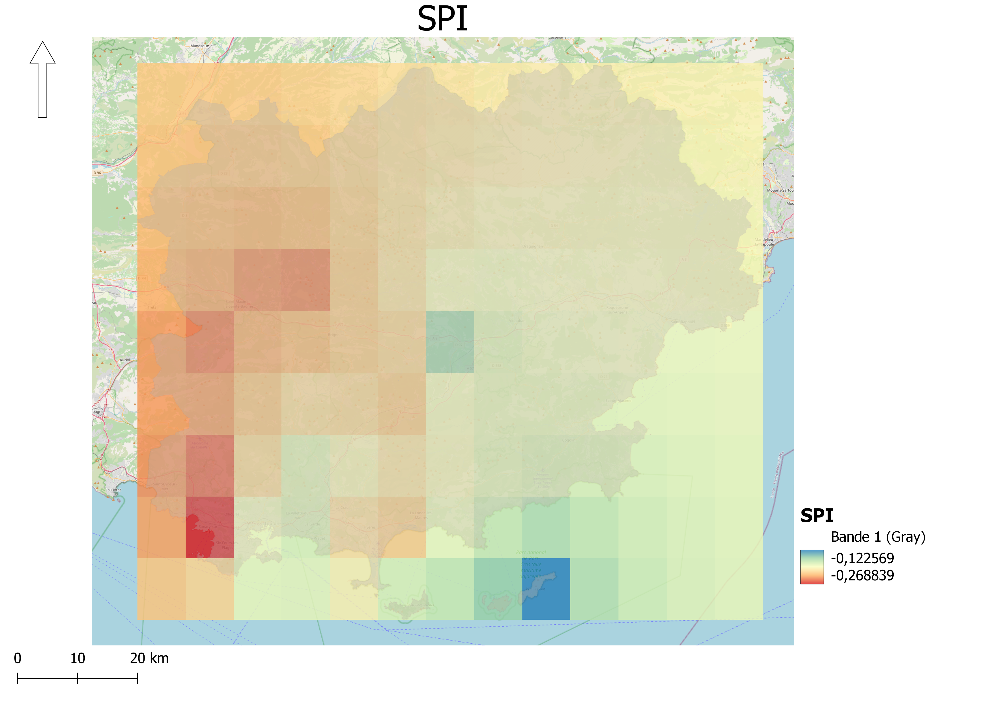
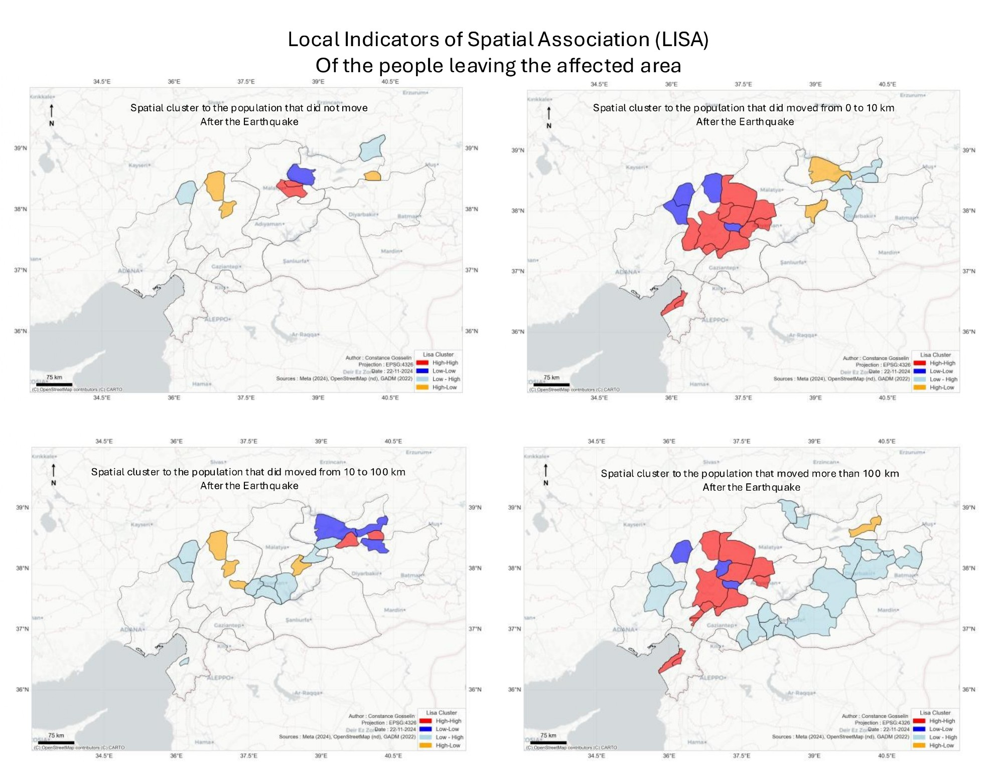
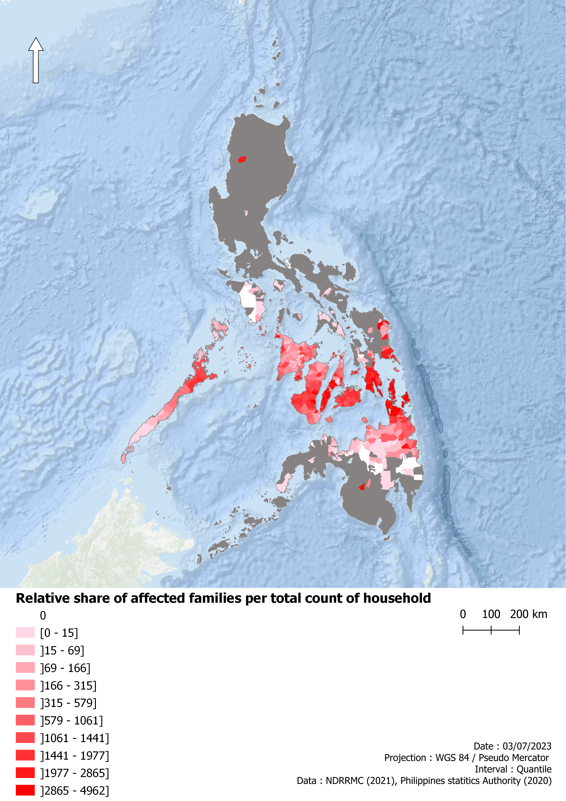
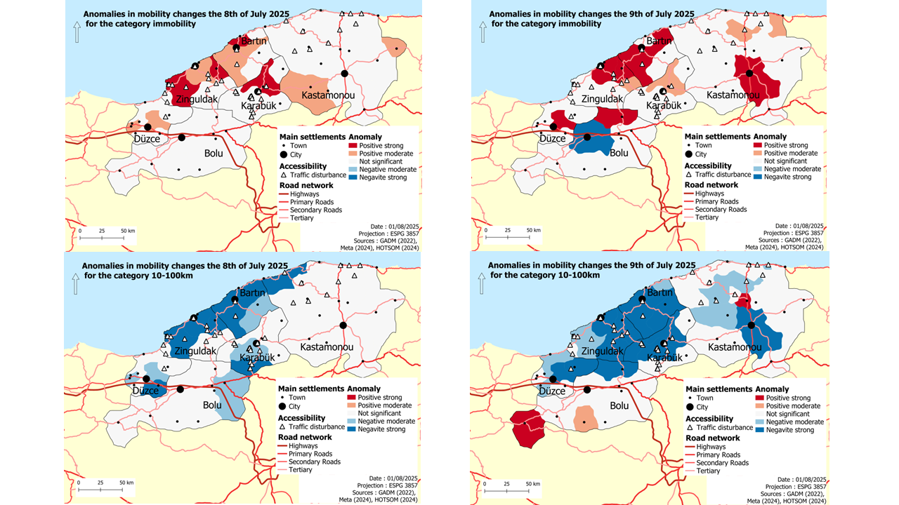

CLIMATE RISK
Climate hazards & extremes
Analysing climate hazards, extremes and environmental change to identify spatial patterns and potential impacts.

Climate Impacts & Geospatial Data Scientist
I turn climate, environmental and geospatial data into actionable insights for climate adaptation and disaster risk.
I work at the intersection of geospatial data, climate science and environmental risk. I use spatial and spatio-temporal analysis, Earth observation, statistical modelling and machine learning to investigate environmental hazards and their impacts.
WHAT I WORK ON

CLIMATE RISK
Analysing climate hazards, extremes and environmental change to identify spatial patterns and potential impacts.

GEOSPATIAL DATA SCIENCE
Processing, modelling and visualising complex spatial and spatio-temporal datasets.

DISASTER & ENVIRONMENTAL IMPACTS
Combining hazard, exposure and vulnerability data to assess impacts on places and populations.
SELECTED WORK

CLIMATE RISK · SPATIAL DATA SCIENCE
Canary Islands · IMPLACOST · University of La Laguna
Analysis of extratropical storm swells affecting the Canary Islands. The project combines environmental datasets, spatial statistics, clustering and machine-learning methods to investigate storm characteristics and their spatial patterns of impact.
View project →
DISASTER RISK · HUMAN MOBILITY
Türkiye · 2023 earthquake · Master thesis
Analysis and validation of Meta movement data to investigate changes in population mobility following the 2023 Türkiye earthquake. The project combines data validation, spatial analysis and statistical methods to assess the potential of digital mobility data for disaster research.
View project →
CLIMATE IMPACTS · VULNERABILITY
Philippines · Typhoon Rai · 2021
Spatial assessment of typhoon vulnerability combining climate-related and socioeconomic indicators to investigate patterns of exposure and vulnerability across affected areas.
View project →ABOUT
I am a geographer and climate data scientist working on climate-related hazards, environmental change and spatial risk. My work combines geospatial analysis, environmental data, statistical modelling and machine learning.
I currently work as a Spatial Data Scientist at the University of La Laguna, where I contribute to research on coastal resilience and climate-related extreme events.
My interests include climate risk, disaster impacts, Earth observation, human mobility and the development of reproducible spatial data workflows for environmental research.
TECHNICAL EXPERTISE
QGIS · ArcGIS · GeoPandas · Rasterio · Shapely · Google Earth Engine
Python · R · pandas · xarray · NumPy · scikit-learn · NetCDF · Dask
Spatial statistics · GWR/MGWR · LISA · DBSCAN · Spatio-temporal analysis · Bayesian modelling
ERA5 · Copernicus · Sentinel · Landsat · Remote sensing · Climate indicators